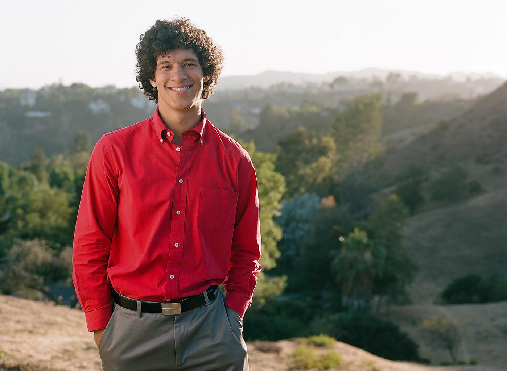

Edgar Rosa is working toward his Master's Degree in Producing at the AFI Conservatory. He holds a Bachelors' in Visual Media Production: Film Producing from Emerson College in Boston. Professional highlights include interning at Good Universe (formerly Mandate Pictures) and The Gersh Agency, raising over $40,000 on the crowdsourcing website Kickstarter, and continuing to work with a diverse clientele base of award-winning producers and directors. When not working in film, Edgar loves to experiment in the kitchen and follow developments in technology. Future plans after graduate school include, facilitating international co-productions outside of the United States.